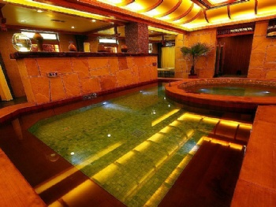
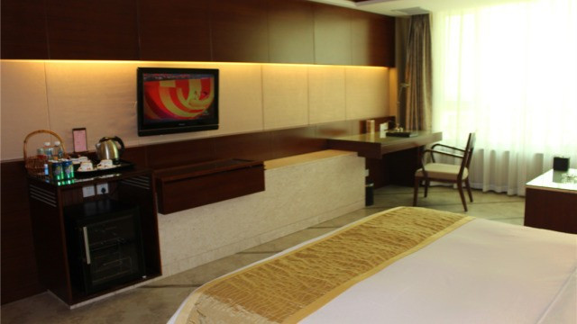

地址：辽宁省辽阳市弓长岭区汤河镇温泉度假村
湿地面积1000余亩，有大型滑雪场、水果、蔬菜采摘园，游乐园、垂钓园、主题公园、高尔夫练习场等， 地理位置造就了特殊的气候形成了一个天然的景观；春季青山碧水；夏季消夏避暑，娱乐休闲；秋季果实飘香，采摘烧烤； 冬季窗外银妆素裹雪场嬉戏，室内美酒莺歌。
酒店园区内有千年古井，流出的神水可医治百病，相传唐王带兵东征时，路过此地，兵困马乏， 很多士兵由于路途劳累， 患上了各种疾病，官兵们见此地有一处热泉涌出，大家一拥而上，用木盆接此水冲洗身体，说来也怪， 当大家用此水冲洗身体过后，顿觉身体轻松，伤病者也减轻了病痛，大家都称之为神水，唐王立即命人在此打造一井， 并从此后，经常到此沐浴。因为此井是唐王所建，故后人称之为唐王井。 后来，有华山道士陈抟云游辽东，得知此泉水有疗百病之神功，就久住朝阳古洞中，推演周易， 将此井按八卦方位筑成，并题诗，题石水涧：银河混落翠光冷,一派回环湛晚晖。几恨却为顽石碍 ，琉璃滑处玉花飞。所以这口井又称为八宝琉璃井…
到了明朝，著名诗人徐崇景来到汤河用此井温泉沐浴后，精神振奋，疾病顿除，于是挥笔写下： 炎流从地发，暖气欲天浮。风过亭台爽，山还景物幽，自怜多病害，不是濯孆帱的美句。清太祖努尔哈赤于天命六年， 定都辽阳，曾多次到汤河用此井温泉沐浴。清康熙皇帝巡视辽东时也曾到汤河用此井温泉沐浴， 并写下了“肃将轩驾到辽阳，暖日晴薰百草芳”的诗句。“ 八宝琉璃井”已被中矿联批准 为首批‘中国优质品牌矿泉水源’， 这是弓长岭区获得‘中国矿泉水之乡’后再获殊荣。